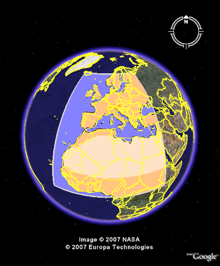

Draping images over the Earth's surface.
Draping images over the Earth's surface.

| kmlStr = ge_groundoverlay(N,E,S,W) |
| kmlStr = ge_groundoverlay(N,E,S,W,Parameter,Value) |
| kmlStr = ge_groundoverlay(N,E,S,W) |
Drapes a given image over the Earth's surface. The image boundaries are defined by the value of input variables "N" (North), "E" (East), "S" (South), and "W" (West).
| kmlStr = ge_groundoverlay(N,E,S,W,Parameter,Value) |
In addition to the above, a number of options can be set regarding the appearance of the groundoverlay. Assigning values to the parameters can be accomplished by inclusion of an alternating sequence of parameters and their value. The table below provides an overview of the authorized options. The order in which the parameters are included does not matter. Please be aware that the options are case-sensitive. Examples are provided further down.
| Parameter | Description |
| 'altitude' | Height difference relative to the plane of reference (see parameter 'altitudeMode'). |
| 'altitudeMode' | Specifies which plane of reference to use. Must be one of 'absolute', 'relativeToGround' or 'clampToGround'. |
| 'color' | Color specification, including transparency. Color value format must be passed as a character array according to the format string 'TTBBGGRR', with 'TT' representing transparency; 'BB', 'GG', and 'RR' representing blue, green, and red color intensity, respectively. Intensity values are denoted as two-digit hexadecimal numbers ranging from 00 to FF. For example, '0000FF00' is fullly transparent green and 'FF0000FF' is fully opaque red. |
| 'description' | A description of objects can be included using this parameter. Its value must be passed as a character array. It will be displayed in the Google Earth Viewer within a pop-up text balloon. |
| 'extrude' | See Extruding objects. |
| 'imgURL' | A character array containing the path to the image to be used by ge_groundoverlay(). Relative paths can be used. |
| 'msgToScreen' | Defines whether verbose feedback is provided by the function when it is accessed and when it finishes. Default is false (which is equivalent to logical(0), but quicker). |
| 'name' | This character array will be used within the Google Earth Viewer 'Places' pane to identify objects. |
| 'polyAlpha' | 2-digit hexadecimal character array specifying the transparency of the grid ('00' is fully transparent; 'FF' is fully opaque). |
| 'rotation' | specifies a rotation of the overlay about its center -180 to 180, in degrees. |
| 'snippet' | A short description of the feature. In Google Earth, this description is displayed in the Places panel under the name of the feature. If a Snippet is not supplied, the first two lines of the description are used |
| 'timeSpanStart' | See Dynamic visualization. |
| 'timeSpanStop' | See Dynamic visualization. |
| 'visibility' | Whether the object is initially visible. Must be passed to ge_box() as a numerical value 1 or 0. Visibility state can be changed within the Google Earth Viewer by clicking the object's checkmark in the 'Places' pane. |
Latitudes on the Southern hemisphere must be passed as negative values. Same for longitudes on the Western hemisphere.
Latitudes and longitudes should be passed in units of decimal degrees (also known as fractional degrees). Google Earth uses Simple Cylindrical projection (also known as Plate Carée) with a WGS84 datum.
Supported image file formats are: '.jpg', '.png', '.gif' and '.bmp'.
See the demo file demo_ge_groundoverlay for more details.
The above lines of code will display as follows when viewed in Google Earth:
